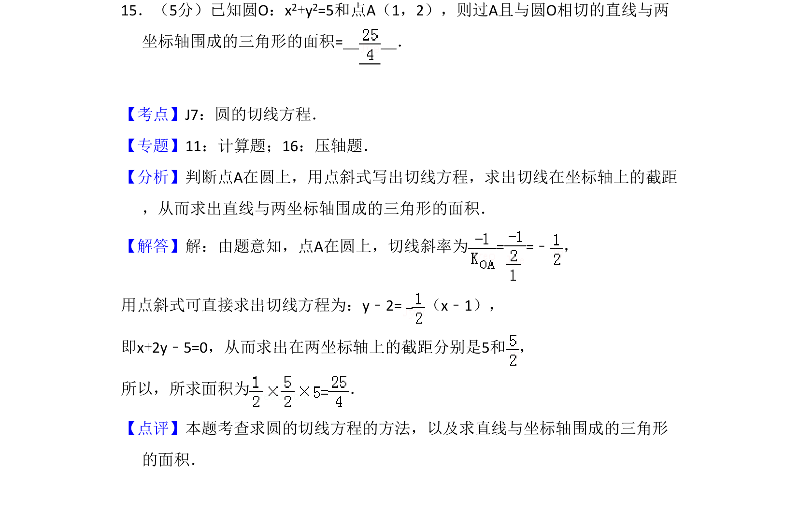
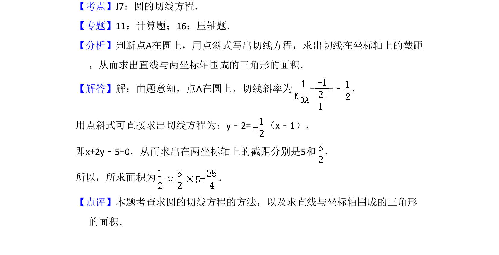

考点：圆的切线方程 直线的截距 三角形面积

求过圆上一点的切线方程并计算其与坐标轴围成的三角形面积

📄 原 PDF 第 10 页：
素材/真题/吉林/2008-2024·（吉林）数学高考真题/2009年高考数学试卷（文）（全国卷Ⅱ）（解析卷）.pdf
15．（5分）已知圆O：x2+y2=5和点A（1，2），则过A且与圆O相切的直线与两 坐标轴围成的三角形的面积= ．
【考点】J7：圆的切线方程．菁优网版权所有 【专题】11：计算题；16：压轴题． 【分析】判断点A在圆上，用点斜式写出切线方程，求出切线在坐标轴上的截距 ，从而求出直线与两坐标轴围成的三角形的面积． 【解答】解：由题意知，点A在圆上，切线斜率为= =﹣ ， 用点斜式可直接求出切线方程为：y﹣2=（x﹣1）， 即x+2y﹣5=0，从而求出在两坐标轴上的截距分别是5和 ， 所以，所求面积为 ． 【点评】本题考查求圆的切线方程的方法，以及求直线与坐标轴围成的三角形 的面积．